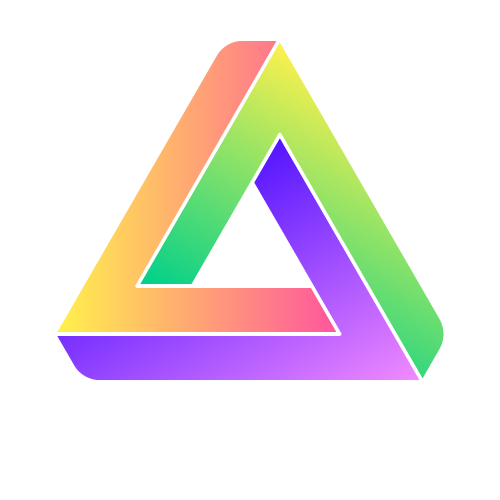

76 个 Coding Agent，一个技能库。
Sukiru 读取下列每个 agent 的技能目录。
- AdaL
- AiderDesk
- Amp
- Antigravity
- Antigravity CLI
- AstrBot
- Augment
- Autohand Code CLI
- Claude Code
- Cline
- Code Studio
- CodeArts Agent
- CodeBuddy
- Codemaker
- Codex
- Command Code
- Continue
- Cortex Code
- Crush
- Cursor
- Deep Agents
- Devin for Terminal
- Dexto
- Droid
- Firebender
- ForgeCode
- fx
- Gemini CLI
- GitHub Copilot
- Goose
- Grok Build
- Hermes Agent
- IBM Bob
- iFlow CLI

inference.sh- Jazz
- Junie
- Kilo Code
- Kimchi
- Kimi Code CLI
- Kiro CLI
- Kode
- Lingma
- Loaf
- MCPJam
- MiniMax Code
- Mistral Vibe
- Moxby
- Mux
- Neovate
- Ona
- OpenClaw
- OpenCode
- OpenHands
- Pi
- Pochi
- Posit Assistant
- Qoder
- Qoder CN
- Qwen Code
- Reasonix
- Replit
- Roo Code
- Rovo Dev
- Sarvam Code
- Tabnine CLI
- Terramind
- Tinycloud
- Trae
- Trae CN
- Warp
- Windsurf
- ZCode
- Zed
- Zencoder
- Zenflow
每个问题，都讲得明白。
过期的锁记录、失效链接、内容分叉的副本，以及被两边同时记账的技能。
两个官方安装器写入同一批宿主目录，却互不读取对方的账本。Sukiru 同时读取两份账本，与磁盘上的实际情况比对，说明出了什么问题、原因是什么。健康的布局和长期提示会收进「备注」。
一个技能，一个归属。
每项修复都交给拥有该技能的安装器。
没有全局的「后端」设置。用 npx skills 安装的技能就用 npx skills 修复，用 gh skill 安装的技能就用 gh skill 修复。Sukiru 自己从不写入安装器的记录。
npx skills update find-skills -g -y
gh skill update pdf --dir ~/.claude/skills
每个技能在哪里，一目了然。
归属、溯源、固定的版本引用，以及在各个宿主中的位置。
查看每个技能由哪个安装器管理、在哪里以链接或副本存在。可在链接和副本之间切换，为手动复制的野技能查找来源，并把它们收编到某个安装器下。
检查、修复、回滚。
一键修复
单独修复一个问题，或全部修复。每次修复生成一个批次，只需确认一次，具体命令点一下即可查看。
安全为先
每个批次都按「快照、执行、比对」运行，确认后即可回滚任一批次。保留最近 10 个快照。
搜索与安装
搜索 skills.sh 和 gh skill search，预览 SKILL.md，再用你选定的安装器安装。
没有 CLI 也能用
即使没装 Node.js 和 gh，Sukiru 依然是完整的只读健康检查工具。
原生体验
纯 Swift，只用系统控件，跟随你的外观与辅助功能设置。支持英文和简体中文。
本地与隐私
没有账户、分析或遥测，也没有后台活动。快照只保存在你的 Mac 上。